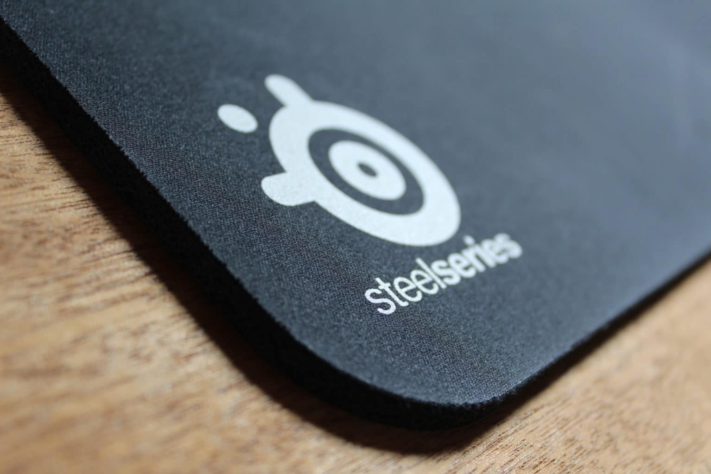

¿Como elegir un Mousepad?
Cuando se busca un mouse pad, hay solo unos pocos factores importantes a tener en cuenta: material, grosor y tamaño. Algunas compañías, como SteelSeries, ofrecen tamaños que van desde los miniatura (24,89 x 21,08 centímetros) hasta los XXL (91 x 45 centímetros), que se adaptan a los jugadores que tienen un espacio limitado en el escritorio o que juegan con sensibilidades muy bajas de puntos por pulgada (DPI) y necesitan mucho más espacio que el usuario medio. Otros usuarios prefieren enormes mouse pad para poder apoyar sus teclados en ellos también. Para probar el rendimiento de un mouse pad, debes utilizarlo jugando a través de una serie de juegos diferentes, incluyendo tiradores en primera persona, títulos de estrategia en tiempo real y experiencias en línea multijugador, para obtener una sensación de dicho mouse pad en diferentes géneros. Como se ha comentado anteriormente, los mouse pads no son tan vitalescomo antes. En ratones con afinación de superficie, un mouse pad amenudo es auxiliar, especialmente si tiene una superficie lisa,uniforme y resistente debajo. Los escritorios de madera puedenresistir a la mayoría de los ratones, como pueden ser fórmica, piedray otros materiales opacos. Por otra parte, si juegas juegos competitivos o simplemente eres unusuario intensivo del ratón, podrías dañar tu periférico o lasuperficie debajo de este. En casos como este, un mouse pad baratopodría ahorrarte tener que gastar mucho dinero para comprar un nuevo escritorio. En general, el ratón y la superficie de escritorio promedio son totalmente inofensivos el uno para el otro, pero un buen ratón para gaming puede durar años. Si vas a invertir 80 dolares en un periférico de primera línea, otros de 10 o 20 dolares no le harán daño a tu cartera. ¿Qué opinas? ¿Qué ratón y alfombrilla tienes actualmente?